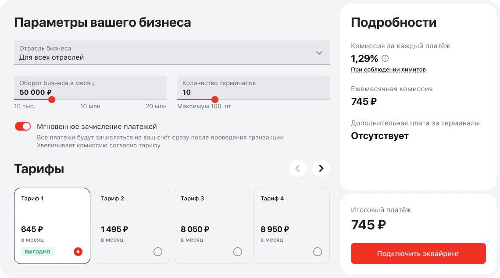
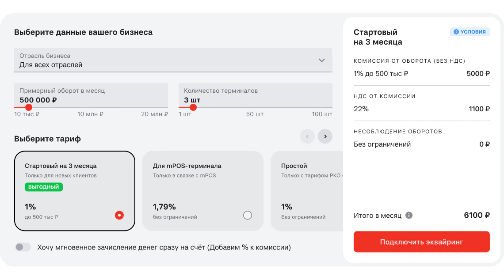
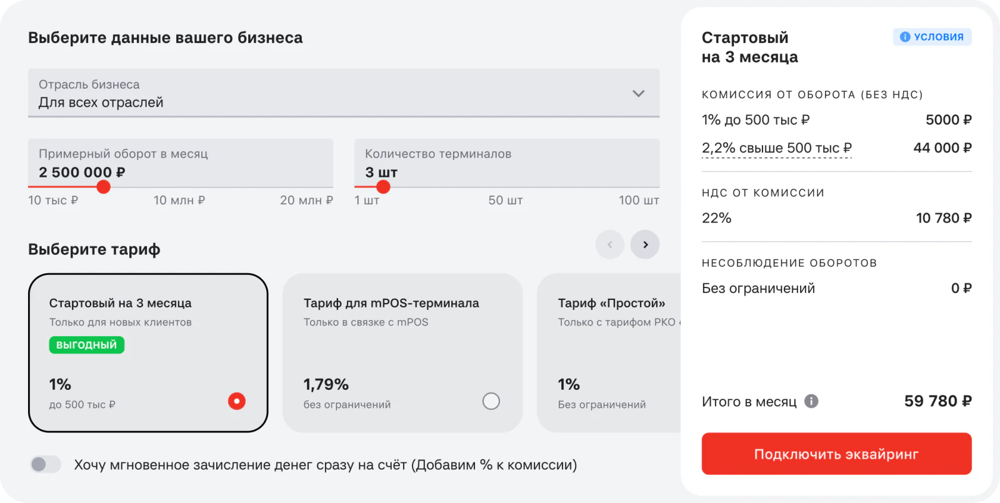
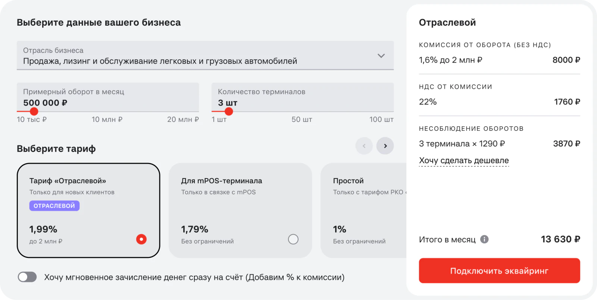
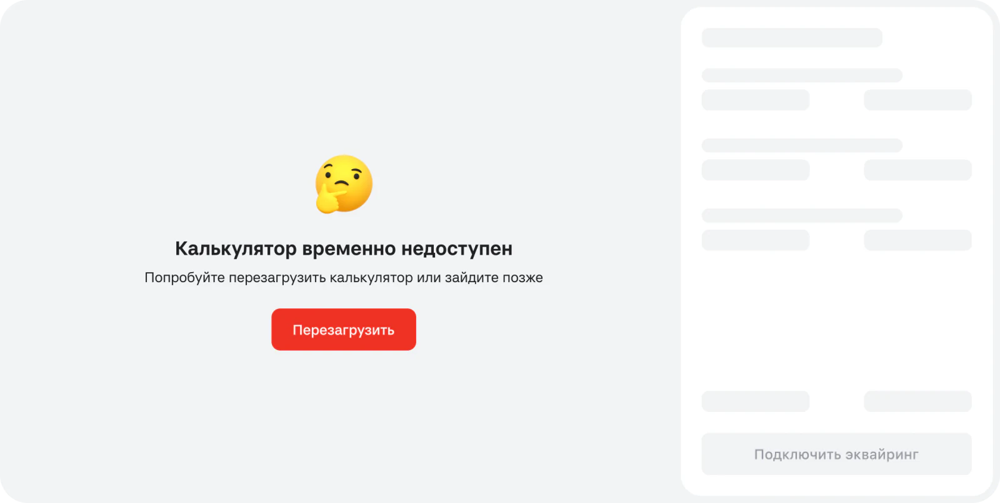
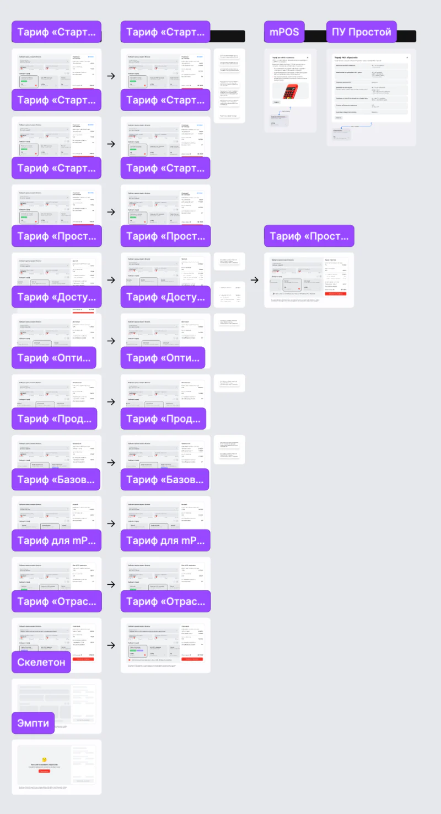
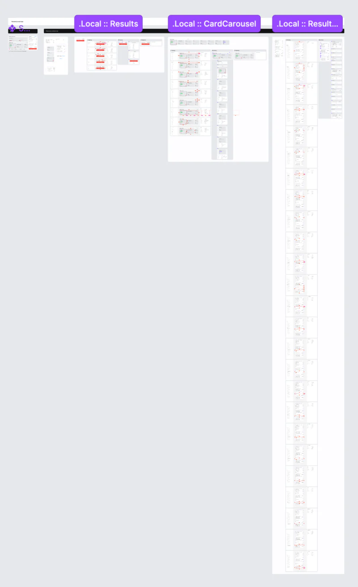
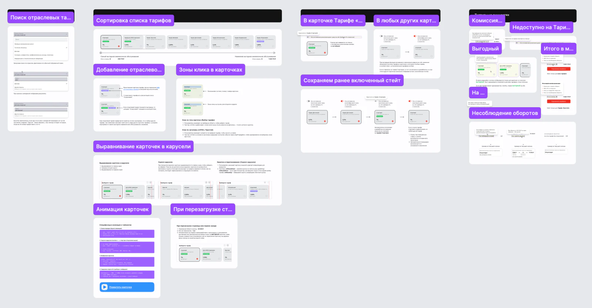

Testing a new tariff calculator inside the real page in two days
The acquiring tariff calculator had been redesigned once and still confused people. Instead of another research round on the live version, I built a working prototype with AI, put it inside the site page and tested my hypotheses on it with business owners. The redesign that followed beat the old calculator in an A/B test.


About
Russia's largest private bank. I work on merchant acquiring — card payments for small and medium businesses — on the bank's website. The tariff calculator sits on the acquiring page, right before the application form.
- Site MAU
- 22M+
- Respondents
- 8
My role
Senior Product Designer on merchant acquiring. The 12 hypotheses, the prototype and the redesign are mine: I built the working calculator myself, a frontend developer helped put it into the page, and a researcher ran the sessions. After the research I turned the findings into options, defended them to the business and got them approved, then took the calculator through analytics, design checks and the designers' working group before handing it to development.
Context
Before applying for acquiring, a business owner wants to know what it will cost. The calculator answers that: industry, monthly turnover, number of terminals — and a tariff with its monthly total.
Agency research in 2024, before I joined, found it hard to use: eight tariffs named “Tariff 5, 6, 7”, prices shown before any input, and a “monthly commission” people read as a fixed fee. A redesign followed, but the tariffs still looked alike and the total still raised questions.
Tariff 5, 6, 7 — that says nothing. I'd take a sheet of paper and write them down to compare.
Business owner, planning to connect acquiring
Problem
The usual path is to research the live version again, design, build, then research once more. Two rounds and months in between — with the risk of fixing only half again.
Decision 1: research the new calculator, not the old one
I turned my hypotheses into a working calculator, so one research round could check both: are the old problems gone, and do the new ideas work.
Figma → Figma Make → code polished in Cursor → GitHub Pages → the site's own iframe widget on an unpublished page. The researcher asked for full immersion — the calculator inside the real page — and the iframe gave it without rebuilding the page around it.
My worry was that people would spot a foreign embed and judge the prototype, not the calculator. None of the 8 respondents did.
Decision 2: let the research sort the hypotheses
People understood how to set turnover, where the commission, terminal fee and VAT are, and used the tooltips. The other six showed what to fix:
- Tariffs looked alike. “Basic” and “Affordable” cost more than “Advanced”; tooltips described different things
- The total read as a fixed fee, not an estimate based on turnover
- The carousel arrows went unnoticed — people thought there were only four tariffs
- No industry search — people scrolled the whole list and settled for “Other”
3,600 a month — is that for service? My turnover is different every month. Do I have to pay it right away?
Business owner, uses acquiring from another bank
Decision 3: a calculator that explains itself
- One card format: name, one feature or who it's for, rate, limit. Prices left the cards — people chose by rate
- Cards sort from cheapest to priciest and physically swap places when inputs change, so the order and the full range are visible. Two and a half cards on screen, clear scroll buttons
- Commission in steps: drag turnover past 500k and a second line appears — 1% up to 500k, 2.2% above. The total is the sum of the lines, laid out like a receipt
- Industry search by letters, plus “Other industry — choose it if yours isn't listed”, so a narrow business never hits a dead end
- Instant crediting moved below the tariffs: respondents said they'd rather wait two days than pay a higher rate. Where a tariff doesn't support it, the card says why instead of disappearing
At a turnover of 2.5M a month the breakdown reads like a receipt:



Developers got every tariff case, interaction and timing described, plus the prototype and the card animation code.



Calculator or table
The agency suggested replacing the calculator with a table. I proposed a tariff picker instead — tell us about your business, we pick the tariff. The business liked it and parked it until the redesign proves itself.
- 9 Apr – 21 May 2026Research on the prototype inside the page: hypotheses and the client profile ready, 8 sessions
- 21 May – end of JuneFindings into options, defended to the business, discussed and approved
- End of Q2Handoff: every tariff case, the prototype and the animation code; analytics, design checks and the designers' working group
- Q3 2026Development
Results
In the A/B test the new calculator raised CR1 — visitors who start an application — by +13.7% against the old one.
The prototype-in-the-page approach stayed with the team for research. I also proposed running A/B tests on such prototypes; it was postponed in favour of a planned platform solution.
What I took from it
- A working prototype in the real page answers more in one round than two rounds on mockups
- Most problems were about meaning, not layout: names, totals and conditions had to explain themselves